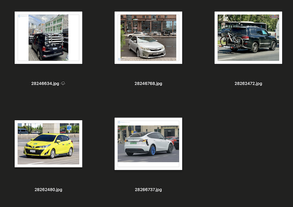

# Install required packages
!pip install --upgrade --quiet ipywidgets pandas 'pydantic-ai-slim[duckduckgo,mcp,openai,openrouter,web-fetch]' python-dotenv braintrust requests tqdm
import os
import urllib.request
import zipfile
# Download and extract data files
url = 'https://github.com/jsoma/workshop-ai-agents/raw/main/docs/01-pydantic-ai-basics/01-pydantic-ai-basics-data.zip'
print(f'Downloading data from {url}...')
urllib.request.urlretrieve(url, '01-pydantic-ai-basics-data.zip')
print('Extracting 01-pydantic-ai-basics-data.zip...')
with zipfile.ZipFile('01-pydantic-ai-basics-data.zip', 'r') as zip_ref:
zip_ref.extractall('.')
os.remove('01-pydantic-ai-basics-data.zip')
print('✓ Data files extracted!')
import os
from getpass import getpass
from dotenv import load_dotenv
load_dotenv()
for key, label in [
("OPENROUTER_API_KEY", "OpenRouter API key"),
("OPENAI_API_KEY", "OpenAI API key, for the OpenAI web search examples"),
]:
if not os.getenv(key):
os.environ[key] = getpass(f"{label}: ")
Pydantic AI - not to be confused with Pydantic! - is a library for interfacing with AI. It's not married to any individual provider (OpenAI, Anthropic, Google), so it's often more flexible and independent than other tools. The people who make it have a track record of quality involvement with the open-source ecosystem so I also trust its continued existence a lot more than other flashy startups.
We'll start by asking a nice simple question to an LLM.
from pydantic_ai import Agent
agent = Agent('openrouter:anthropic/claude-haiku-4-5')
result = await agent.run('Where does "hello world" come from?')
print(result.output)
Instead of talking directly to Anthropic or OpenAI, we're using OpenRouter instead. OpenRouter offers a zillion and one models, along with much better API key management than dealing directly with the providers themselves. If you wanted to talk directly to openai, you definitely can - just use openai:gpt-5-nano instead.
from pydantic_ai import Agent
agent = Agent('openrouter:openai/gpt-5.4-nano')
result = await agent.run('Where does "hello world" come from?')
print(result.output)
from pydantic_ai import Agent
agent = Agent(
'openrouter:openai/gpt-5.4-nano',
instructions="Be very, very terse in your responses.")
result = await agent.run('Where does "hello world" come from?')
print(result.output)
One of the best use cases for AI is asking for structured data from something unstructured, like court cases. Maybe we have some text we extracted from a PDF of a lawsuit:
lawsuit = """
Case No. 23STCV12345
Let it be known that a LAWSUIT has been filed in the Superior Court of California,
County of Los Angeles, on July 5 2028.
Barnaby Rutherford vs. Tamper Media LLC
on condition of fraud, breach of contract, and negligence.
The plaintiff alleges that the defendant failed to deliver the
agreed-upon services, resulting in financial losses and emotional distress.
The lawsuit seeks compensation for damages incurred and any additional relief
deemed appropriate by the court.
"""
A naive approach to extract from an LLM might look like the code below.
from pathlib import Path
from pydantic import BaseModel
from pydantic_ai import Agent, BinaryContent
MODEL = "openrouter:google/gemini-3.1-flash-lite"
prompt = """List the following about this lawsuit:
- case number
- court
- state
- filing date
- plaintiff
- defendant
- claims
"""
agent = Agent(MODEL)
result = await agent.run([prompt, lawsuit])
print(result.output)
That's easier to read, but not perfect, though. We want something nice and programmatic, JSON or dictionaries! This is where Pydantic comes in. You build a model around what you want your response to look like.
from pathlib import Path
from pydantic import BaseModel
from pydantic_ai import Agent
MODEL = "openrouter:google/gemini-3.1-flash-lite"
class LawsuitInfo(BaseModel):
case_number: str
court: str
state: str
filing_date: str
plaintiff: str
defendant: str
claims: list[str]
agent = Agent(MODEL,
instructions="Extract the lawsuit information",
output_type=LawsuitInfo)
result = await agent.run(lawsuit)
print(result.output)
Take for example this car:
Just like the lawsuit, we can feed it directly to an LLM and ask questions about it.
from pathlib import Path
from pydantic import BaseModel
from pydantic_ai import Agent, BinaryContent
MODEL = "openrouter:google/gemini-3.1-flash-lite"
DATA = Path("data")
class VehicleInfo(BaseModel):
make: str | None
model: str | None
type: str | None
color: str | None
license_plate: str | None
estimated_year: str | None
image = BinaryContent(
data=(DATA / "car.jpg").read_bytes(),
media_type="image/jpeg",
)
agent = Agent(MODEL,
instructions="Extract the appropriate vehicle information",
output_type=VehicleInfo)
result = await agent.run([prompt, image])
print(result.output)
Pydantic and structured outputs shine when you have a lot of data, like all of these car photos.

You make the same setup as before.
While we're at it I'm also going to get very detailed about what we're asking for. We could have done this before but I was trying to keep things simple!
from pathlib import Path
import pandas as pd
from pydantic import BaseModel, Field
from pydantic_ai import Agent, BinaryContent
from typing import Literal
MODEL = "openrouter:google/gemini-3.1-flash-lite"
DATA = Path("data")
class Vehicle(BaseModel):
make: str = Field(description="Vehicle manufacturer")
model: str = Field(description="Vehicle model name")
color: str = Field(description="Primary color")
year_estimate: int = Field(description="Estimated model year")
vehicle_type: Literal[
"sedan", "SUV", "truck", "van", "motorcycle", "other"
] = Field(description="Type of vehicle")
confidence: float = Field(description="Confidence in identification, 0.0 to 1.0")
license_plate: str | None
agent = Agent(MODEL, output_type=Vehicle)
...and then you just loop through it, collecting the outputs and pushing them into a dataframe.
from tqdm import tqdm
PROMPT = "Analyze the vehicle in this image. Fill in all fields."
rows = []
image_paths = sorted((DATA / "cars").glob("*.jpg"))
for image_path in tqdm(image_paths):
# Get the result
image = BinaryContent(data=image_path.read_bytes(), media_type="image/jpeg")
result = await agent.run([PROMPT, image])
# Save the result
row = result.output.model_dump()
row["filename"] = image_path.name
rows.append(row)
print(f"Processed {len(rows)} images.")
df = pd.DataFrame(rows)
df
Talking to an LLM one step at a time is fine, but that isn't what makes something agentic.
Agentic work is about giving the LLM options and letting it work independently until it decides it has come to an answer.
We'll start with WebSearch, which... searches the web.
from pydantic_ai import Agent
from pydantic_ai.capabilities import WebSearch, WebFetch
MODEL = 'openrouter:anthropic/claude-haiku-4-5'
# Uses the web search built-in to the LLM provider
agent = Agent(
MODEL,
capabilities=[WebSearch(local=False)],
)
prompt = """
Research who Jonathan Soma is and provide a two-sentence summary
of who he likely is.
"""
result = await agent.run(prompt)
print(result.output)
You can provide all sorts of options to WebSearch, the most useful are probably site-specific search and location-specific search.
We'll talk about this more, but WebSearch by default is a provider tool, not something you can infinitely customize and have control over. It runs on OpenAI's servers or Anthropic's servers (or whoever else's), and most of the customization is only available in this "native" format, not with the "local" (on your computer) approach.
from pydantic_ai import Agent, WebSearchTool, WebSearchUserLocation
from pydantic_ai.capabilities import NativeTool
# Different LLM providers have different options
# allowed_domains= does not work with openrouter!
agent = Agent(
# 'openrouter:anthropic/claude-haiku-4-5',
'openai-responses:gpt-5.4',
capabilities=[
NativeTool(
WebSearchTool(
search_context_size='medium',
user_location=WebSearchUserLocation(
city='New York',
country='US',
region='NY'
),
allowed_domains=['brooklynbrainery.com'],
)
)
],
)
result = await agent.run('Research who Jonathan Soma is and provide a two-sentence summary of who he likely is.')
print(result.output)
Search: Perplexity, Exa, Tavily, DDG
from pydantic_ai import Agent
from pydantic_ai.common_tools.duckduckgo import duckduckgo_search_tool
agent = Agent(
'openrouter:anthropic/claude-haiku-4-5',
tools=[
duckduckgo_search_tool(max_results=10)
]
)
result = await agent.run("""
Research who Jonathan Soma is and provide a two-sentence summary of who he likely is and what he's teaching this semester.
""")
print(result.output)
So far we've only seen tools that search the web. Maybe you have another source of information: an API, local documents, a Slack channel, etc etc etc.
Custom tools allow you to enable the agent to do things it can't do out-of-the-box. Acquiring information is just one tiny slice of opportunity!
import requests
from datetime import datetime
# The docstring explains to the agent what the tool does
def get_date() -> str:
"""Get the current date."""
return datetime.now().strftime("%Y-%m-%d")
def get_jrn_schedule(semester: Literal["Fall", "Spring", "Summer"], year: int) -> str:
"""Get Columbia Journalism School's schedule details for a given semester, and year."""
# https://doc.sis.columbia.edu/sel/JOUR_Spring2026_text.html
response = requests.get(f"https://doc.sis.columbia.edu/sel/JOUR_{semester}{year}_text.html")
if response.status_code != 200:
return "Schedule not found."
return response.text
text = get_jrn_schedule("Fall", 2023)
text[:2000]
Let's give it a try: this agent has a handful of tools. See what happens if you add or remove them!
from pydantic_ai import Agent
from pydantic_ai.common_tools.duckduckgo import duckduckgo_search_tool
agent = Agent(
'openrouter:anthropic/claude-haiku-4-5',
tools=[
duckduckgo_search_tool(max_results=10),
# get_date,
get_jrn_schedule
]
)
result = await agent.run("""
Research who Jonathan Soma is and provide a two-sentence summary of who he is and what he's teaching this semester.
""")
print(result.output)
You can look under the hood to see what tools were called, but it isn't very attractive.
from pydantic_ai import ToolCallPart
for message in result.all_messages():
for part in message.parts:
if isinstance(part, ToolCallPart):
print("\n## TOOL CALLED")
print("name:", part.tool_name)
print("args:", part.args_as_dict())
To do this "properly" we're going to instrument our agent.
Observability is the ability to see what's going on inside of your agent. Instrumentation is the process of adding the tools to your agent that allow it to be observed.
We're going to use Braintrust, but LogFire, LangFuse, Arize Phoenix are all other alternatives. The space is crowded!
from braintrust.wrappers.pydantic_ai import setup_pydantic_ai
setup_pydantic_ai(project_name="dataharvest-2026")
from pydantic_ai import Agent
from pydantic_ai.common_tools.duckduckgo import duckduckgo_search_tool
agent = Agent(
'openrouter:anthropic/claude-haiku-4-5',
tools=[
duckduckgo_search_tool(max_results=10),
get_date,
get_jrn_schedule
]
)
result = await agent.run("""
Research who Jonathan Soma is and provide a two-sentence summary of who he is and what he taught last semester.
""")
print(result.output)
Now I can go see what happened in my Braintrust logs.
As a point of comparison, try it with the following:
from pydantic_ai import Agent
agent = Agent(
'openrouter:anthropic/claude-haiku-4-5',
capabilities=[WebSearch(), WebFetch()]
)
result = await agent.run("""
Research who Jonathan Soma is and provide a two-sentence summary of who he is and what he taught last semester.
""")
print(result.output)
Pydantic can be confusing - tools, toolsets, capabilities, MCP servers... and it doesn't even stay stable! We accept Pydantic's faults, though, and move on.
Pydantic has some built-in abilities, but they recently moved some of them into the Pydantic AI harness and let random folks take over some of the implementations and it's just... a little messy at the moment. Take a breath.
vstorm seems to have done a lot with Pydantic but that repo has under a hundred stars, so I don't feel great about it. This is why below we're using the official modelcontextprotocol filesystem MCP server instead of the Pydantic AI Backend one, even though the backend one claims to sandbox etc.
MCP servers are your ability to talk to some other piece of software. Bridges or APIs, if you will.
Below we use one for the filesystem and one for Powerpoint.
Point of discussion: why an MCP Server for Powerpoint instead of a Powerpoint library that runs in Python?
from pydantic_ai.mcp import MCPToolset
file_server = MCPToolset({
"mcpServers": {
"filesystem": {
"command": "npx",
"args": [
"-y",
"@modelcontextprotocol/server-filesystem",
str("."),
],
}
}
})
ppt_server = MCPToolset({
"mcpServers": {
"ppt": {
"command": "uvx",
"args": [
"--from", "office-powerpoint-mcp-server", "ppt_mcp_server"
],
"env": {}
}
}
})
# We'll start without toolsets
agent = Agent(
'openrouter:anthropic/claude-haiku-4-5',
# toolsets=[file_server, ppt_server],
)
instructions = f"""
You are a helpful assistant.
"""
prompt = f"""
What files are in the current directory? Make a powerpoint presentation about how you did it.
"""
result = await agent.run(prompt,
instructions=instructions)
print(result.output)